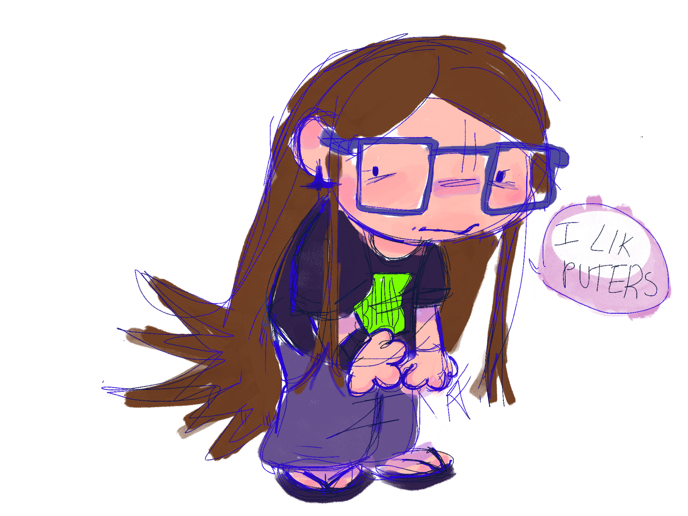
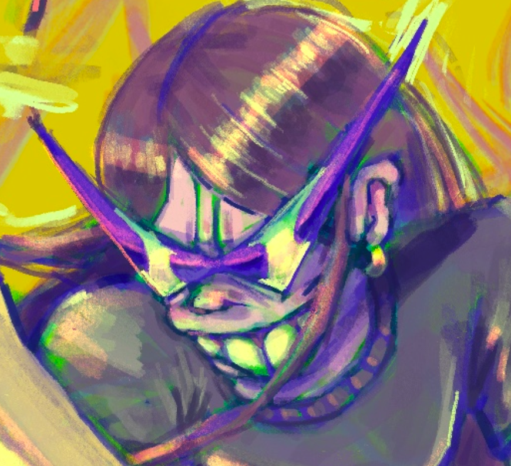

home
✦
about
✦
gallery
✦
resources/guides
✦
tributes
✦
projects
✦
links

YO!
Ive gone by many names on the interwebs for the many years ive been around, but you can call me NicheKid, or NK for short!
I work at customer service by day and by night I mostly sleep, BUT ALSO I make things sometimes. If I'm not extremely exhausted/busy.
I'm a geeky funky little gal who loves video games, drawing, music, tech, programming, writin stories, and being creative. I practically grew up with a controller and pencil in my hands, and used to be deathly afraid of the insides and workings of technology, even though I was fascinated by it. I'd constantly ask my self questions on how things worked, and never really got satifying andswers, so I started to research it for myslef. It made me fall into the rabbit hole of retro tech, computers, consoles, video game history and so much more, and slowly, I just grew evn more fascinated with these things. I enjoy coding but dont feel like I can call my slef a full blown programmer even though Ive made small game projects before and enjoy computer science and currently studying it as well as front-end web dev and software engineering.
I also dabble in repairing hardware! EVen though softwares more my thing, hardware is just as equally important, and I enjoy taking apart things and repairing things. Ive repaired my broken consoles and controllers before, and I really believe in repairing and fixing your electronics, instead of continuing to pollute the earth with tech thats been thrown away because companies want you believe its obsolete, or better said, unusable.
Here are some photos of my prized jp import ps vita 1000, that I tragically dropped and shattered the oem screen, but then took apart and fixed:
I've loved art ever since I was small, and started off drawing fan-art and making fan characters of the things I was fixated on at the time. Even though I dont really make fan-characters anymore, the ones I did make made me fall in-love with art, character design and story telling even more. I improved my drawing and writing skills, and shed blood sweat and tears to try to bring my characters to life and eventually, maybe one day, share their story to the world. Im trying to take the first step by showcasing them on my site (hopefully). I've been priavte about my characters for many years, and characters, stories, worlds, universes I've created have mostly just stayed inside of my head, so I want to make the effort to be able to express them one day.
Art is an incredible and powerful medium to create and express what one cannot express through words alone.
My love for making characters made me also develop an interest in psycology. I love characters that even if they happen to not be even be human, feel human in thier thoughts, feelings and actions. I also love media that discusses or sheds light about heavy subjects (mental health, disorders, illnesses etc.) in way that brings awareness to them but doesn't make fun of, demonize, and/or glorify it.
Like I mentioned previously, I've loved video games since I was a wee child, and grew up loving sony and nintendo. My first sony console ended up being a ps3 and my first nintendo console was a ds lite that was gifted to me. I still own them and cherish them very much so, as they introduced me into completely different worlds from the comfort on my home. It combines so many art forms thst I adore, programming, art, 3d modeling, music, story-telling, world-building and so much more. I also only realized this recently, but my love for sega as a young one has really shaped many of my own interests, (ESPECIALLY music my god) and I still love sega till this day, Sonic Adventure 1 and 2 is still probably one of my favorte games of all time and I discovered Jet Set Radio (my beloved) and Space Channel 5 and so many sega properties that really need more love nowadays.
I have a love-hate relationship with tech/video game companies (mostly hate). I usually like what they make but hate the decisions they make. I also dont really like social media and never had a huge presence on it. The only ones I really use currently are Youtube, Discord, and Pintrest.
Media literacy is dying, and people don't want to think for themselves anymore. Or... they dont have energy to.
Interests
TLDR: on left Overview: Name: Interests: Personality: Music: Anime/manga: TV Shows: Games:
Ambivert
FAQ:
Can I use your code?
What resources do you use for x?
Why did you make a website?

If you made it this far, thank you!